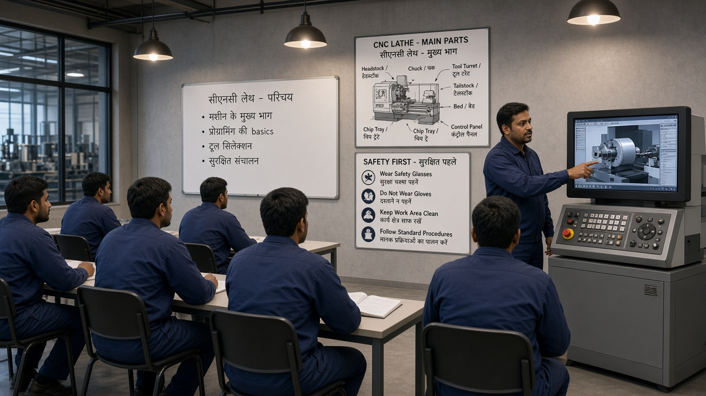

Automotive
Two-wheeler, PV, and CV drivetrain & chassis parts for Pune, Chennai, and Gurugram plants.
About Aarohan
We started as a two-bay forge shop in Chakan. Today Aarohan runs four plants feeding OEMs from Pune to Hosur — still family-led, still obsessed with microns.
Our purpose
India’s factories deserve suppliers who understand festival shutdowns, monsoon logistics, and the pressure of a festive-season ramp. We pair that ground reality with IATF systems, digital SPC, and engineers who walk the line before they open a slide deck.
Whether you need a bridge supplier for a sudden volume spike or a long-term partner for a new EV platform, Aarohan treats your line stoppage as our emergency.

“We don’t sell capacity slides. We sell the confidence that your Monday morning line will have parts — even when Sunday was Ganesh immersion traffic on NH48.”
Vikram Deshmukh · Managing DirectorWho we serve
Two-wheeler, PV, and CV drivetrain & chassis parts for Pune, Chennai, and Gurugram plants.
Bogie, coupler, and underframe components for Indian Railways vendor programmes.
E-axle housings, motor brackets, and battery tray structures with clean coolant cells.
Gear blanks, shafts, and housings for agri, construction, and pump manufacturers.
Campus map
All units sit within the Chakan–Talegaon belt so tooling, metallurgy, and planning share one ERP and one quality language.
Original Deshmukh forge — closed-die presses, billet heating, and die try-out for hubs, knuckles, and connecting rods.
Horizontal and vertical machining with pallet pools, SPC dashboards, and lights-out cells for stable high-runners.
Carburising, induction harden, temper lines plus CMM and metallography supporting PPAP Level 3 packs.
Dedicated bay for e-axle housings, tray brackets, and serialised module pack-out for western India EV lines.
Milestones
Founded by the Deshmukh family with a single forging line supplying two-wheeler hubs to Pune OEMs. Early customers came through MIDC neighbour referrals, not glossy brochures.
Added VMC cells and in-house heat treatment — moving from forge-only to finished component supply. First PPAP approved for a Gurugram tier-1 within nine months.
Secured IATF 16949 and began bogie and coupler component programmes for Indian Railways vendors. Installed the first Zeiss CMM on campus.
Launched the shop-floor academy for setters and inspectors — bilingual modules in Marathi and English covering 5S, poka-yoke, and basic SPC.
Commissioned Plant 4 for e-axle housings and battery tray brackets with clean coolant systems and serialised pack-out.
Dedicated packing and documentation bay for ASEAN and Middle East aftermarket consignments, with GST and COO paperwork owned in-house.
People & place
Most of our workforce lives within a 25 km radius of the plants — villages around Rajgurunagar, Khed, and Talegaon. That proximity means night-shift continuity and a culture where supervisors know families, not just employee IDs.
We hire ITI and diploma talent through local polytechnics, then put every new joiner through Aarohan Gurukul before they own a cell. Safety briefings run in Marathi first; quality alerts go out in Marathi and English the same hour.
Community work stays practical: tool scholarships for ITI students, monsoon drain support near the MIDC gate, and blood donation camps every Republic Day week with the Pune district hospital.

How we work
Integrity first — we flag a process drift before your auditor does. No quiet concessions on PPAP, no “adjust and ship” culture.
Respect for the people who run the machines. Training hours are tracked as seriously as OEE, and overtime is planned — not assumed.
Excellence in the small things — gauge R&R, 5S audits, and packing that survives NH48 potholes and monsoon humidity.
Solar on Plant 2 & 4 roofs, closed-loop coolant recovery, and scrap segregation sold only to registered recyclers in Maharashtra.
ISO 45001 systems, mandatory PPE zones, and a full-time occupational health nurse on day shift with ambulance MOU for night emergencies.
Visit Chakan
Plant tours for sourcing and SQA teams — book a slot and we’ll arrange PPE, cutting chai, and the real process story.